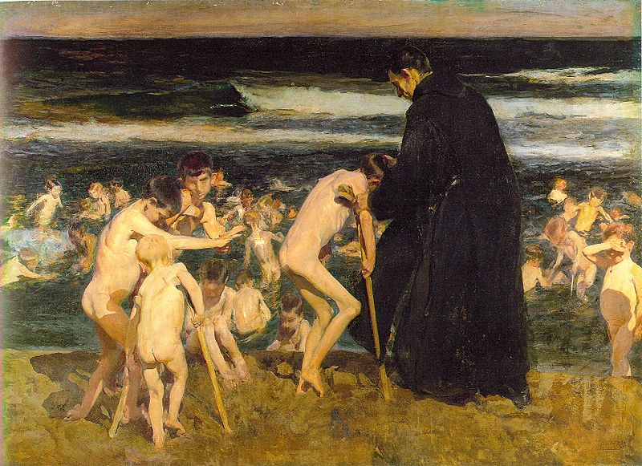
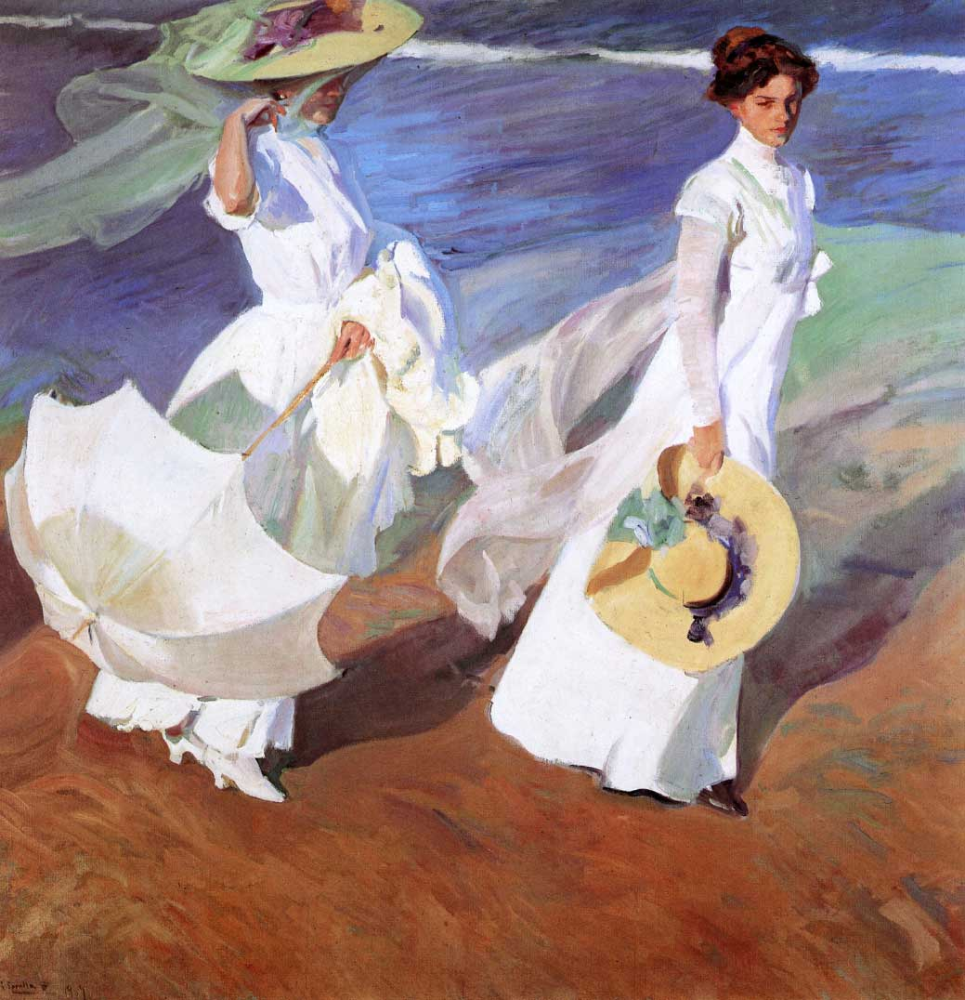

Joaquin Sorolla was een brilliant schilder die ondanks talloze tentoonstellingen in Europe en Amerika - die grote aantallen bezoekers kregen - toch onvoldoende bekend is buiten zijn geboorteland Spanje.
Sorolla was gespecialiseerd in portretten, landschappen en werken met een sociaal of historisch thema. Zijn eerste grote succes was "Otra Marguerita", een sociaal realistisch werk naar een thema uit Faust Het toont het drama van vrouw die na een buitenechtelijke zwangerschap haar kind verstikte.
Zijn echte grote doorbraak kwam er met "Triste herensia" waar hij opnieuw een sociaal thema aansnijdt, nl. de gevolgen van polio op de spaanse kinderbevolking.
Zijn vroege werk kan gerekend worden tot het realisme, maar gaandeweg veranderde zijn stijl zich richting impressionisme, maar werd het niet helemaal en ontwikkelde een eigen stijl. Hij werkte dan vooral in de buitenlucht en schilderde talloze strandscene's aan de Middellands zee rond Valencia.
Neem nu bijvoorbeeld het werk "Chicos en la playa" of "Después del baño", daar zie je het schitterende kleurenpalet van Sorolla waarmee hij alle nuances van strand, de zee, de schittering van het licht vangt. Hij was ongeëvenaard in het weergeven van schaduwen en lichtpartijen onder de felle mediterane zon.
Op het hoogtepunt van zijn carriëre was S. eer productief en maakte enerzijds veel protretten (o.a. van koning Alfonso) en strandscenes, in een stijl die Luminisme genoemd werd, door de meesterlijke weergave van licht en schaduw. De meeste auteurs plaatsen deze stijl onder het post-impressionisme, door het rijke kleurenpalet, de beweging en de vaag-realistische figuren.
Hij was ook een zeer snel schetser, liet soms compleet na te tekenen en schilderde meteen, alles op het strand zelf.
Hij was een goede vriend van de Amerikaanse portrettist John Singer Sergeanten bezocht hem meermaals in de USA en in Parijs. Zijn invloed valt af te leiden uit sommige portretten.